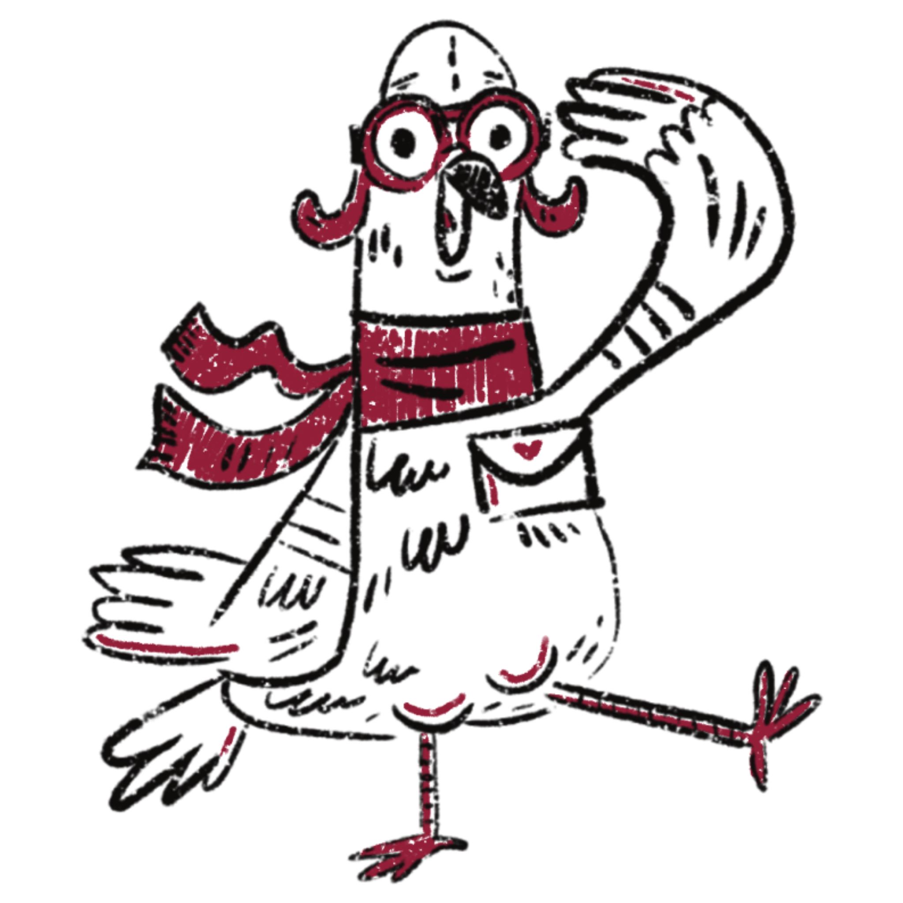

+
What kind of projects do you specialize in?
My specialty lies in visual storytelling through zines, illustrations, branding, and digital interface design.
Whether it's a deeply personal zine or a playful app prototype, I am all about infusing a unique narrative into every project.
+
Can I collaborate with you or hire you for a project?
Absolutely! I am open to freelance opportunities and collaborations.
Feel free to drop me a message through the contact page, and we'll surely discuss ideas.
I am excited to create something unique together!
+
What is your design process like?
It is a mix of research, sketching, and a lot of experimenting. I start by understanding the context and story behind the project, then dive into brainstorming and creating mockups.
There is always a focus on making things visually compelling and meaningful.
+
What tools or mediums do you prefer to use?
I love mixing traditional mediums like ink and watercolor with digital tools like Illustrator and Procreate.
There is something magical about the blend of raw, hand-drawn elements with the precision of digital design. It keeps things fresh and full of surprises.
+
What is the story behind the pigeon mascot?
I will just say I have had a lot of run-ins with these city birds. One day I started doodling them as a joke, and now they have taken over! Plus, honestly, their sense of direction inspires me to have the same with the projects I am a part of. And yeah,
they remind me not to take things too seriously and to enjoy the unexpected (and sometimes chaotic) moments in the creative process.